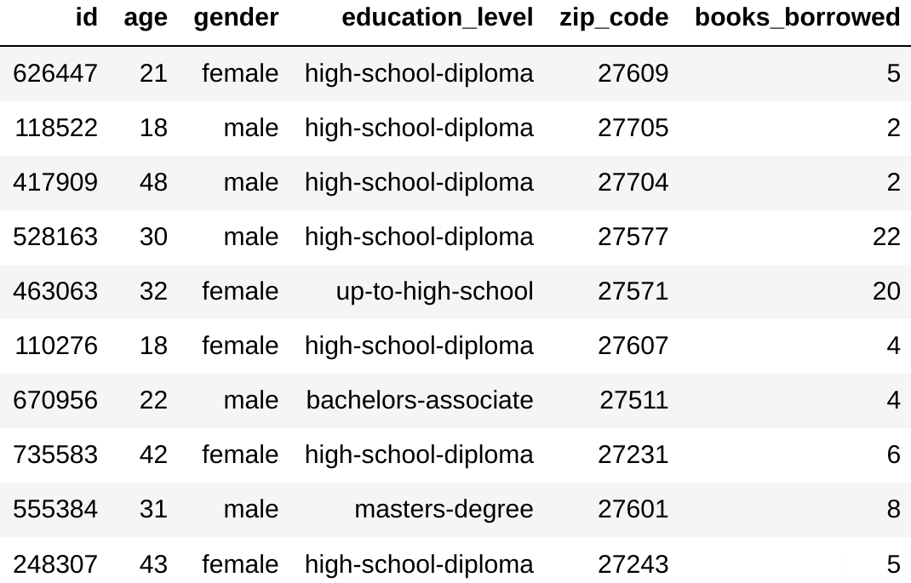

Basics of synthetic data generation#
Note
The features described in this page are only available on a paid version of the Tumult Platform. If you would like to hear more, please contact us at info@tmlt.io.
In this tutorial, we will demonstrate how to generate synthetic data using Tumult Synthetics.
Setup#
The setup process is very similar to other tutorials: we import necessary objects from Tumult Analytics and Tumult Synthetics, and download the data we will use as input for synthetic data generation.
import datetime
from pyspark import SparkFiles
from pyspark.sql import SparkSession, functions as sf
from tmlt.analytics import (
AddOneRow,
ApproxDPBudget,
BinningSpec,
KeySet,
QueryBuilder,
Session
)
from tmlt.synthetics import (
ClampingBounds,
Count,
FixedMarginals,
Sum,
generate_synthetic_data,
)
spark = SparkSession.builder.getOrCreate()
spark.sparkContext.addFile(
"https://tumult-public.s3.amazonaws.com/library-members.csv"
)
members_df = spark.read.csv(
SparkFiles.get("library-members.csv"), header=True, inferSchema=True
)
We use the same dataset as in Tumult Analytics tutorials: a list of members of a fictional public library, which includes demographic information, as well as data on their library usage. Let’s take a look at a subset of columns of this dataset.
columns = ["id", "name", "age", "gender", "education_level", "zip_code", "books_borrowed", "date_joined"]
members_df.toPandas()[columns].sample(n=10)

Our goal will be to generate synthetic data that matches the shape and distributional properties of this subset of columns.
Initializing the Session#
Our library members dataset is sensitive: we want to make sure the data of each member
is well-protected, and that individual data cannot be retrieved from the synthetic data.
To enforce strict differential privacy guarantees on our synthetic data, we first wrap
our table in a Session, and specify the desired privacy
guarantee. All interactions with the Session will enforce this privacy guarantee.
session = Session.from_dataframe(
source_id="members",
dataframe=members_df,
protected_change=AddOneRow(),
privacy_budget=ApproxDPBudget(epsilon=5, delta=1e-6),
)
Here, ApproxDPBudget(epsilon=5, delta=1e-6) corresponds to
(ε,δ)-differential privacy, and AddOneRow() means that we are hiding the
addition or removal of one row in the members dataset. Given that each person
corresponds exactly to one row, this means that we are protecting the
information of each individual library member in the dataset.
You can learn more about the Session and privacy budgets in the first and second Tumult Analytics tutorials, and in the topic guides about the Session’s privacy promise and privacy budgets.
Defining metadata#
The first step to synthetic data generation is specify metadata about the columns in the input data. There are three kinds of columns.
Identifier columns contain data that is often unique to each person (or protected entity) in the dataset. The statistical distributions of such columns is not preserved by synthetic data generation.
Categorical columns contain either a fixed number of possible values, or can be grouped into a fixed number of bins. Synthetic data generation attempts to preserve the statistical distribution of individual columns, as well as correlations between categorical columns.
Numeric columns contain numbers. Synthetic data generation attempts to preserve the value of sum queries over numeric columns, possibly grouped by categorical columns.
In our dataset:
idandnameare identifier columns,gender,education_level,favorite_genre,date_joinedandzip_codeare categorical columns,books_borrowedis a numeric column.
We could consider age either as an categorical column or a numeric column. A
good rule of thumb is that categorical columns are a good choice to preserve
correlations between column values, while numeric columns are better to
preserve sums of values in a column. In this example, we will consider age
to be a categorical column.
Identifier columns#
Identifier columns are particularly sensitive, and often do not contain statistical information that needs to be preserved. We do not use them in the main synthetic data generation routine; instead, we fill them with random information after the generation step.
Categorical columns#
For categorical columns, we need to specify the possible values that these columns can
take, using the KeySet class. For more information about
KeySets, you can consult the Group-by queries tutorial.
For some columns, we can simply enumerate these values.
gender_keys = KeySet.from_dict({
"gender": ['female', 'male', 'unspecified', 'nonbinary'],
})
edu_keys = KeySet.from_dict({
"education_level": [
'up-to-high-school',
'bachelors-associate',
'high-school-diploma',
'masters-degree',
'doctorate-professional'
],
})
age_keys = KeySet.from_dict({
"age": list(range(5, 100)),
})
We could also have used a public table to specify the list of possible values
with KeySet.from_dataframe(). This is particularly useful when there are
a large number of possible values of a column (or combinations of columns).
In some other columns, like date_joined, we could enumerate all possible
values, but this enumeration would have a very small granularity (few people
sign up to the library at any given day), which would lead to
~bad utility. Instead, we use binning, and group
all the dates from the same year and month together using a
BinningSpec.
# Our data has values ranging from early 2012 to late 2021.
date_bin_edges = [
datetime.date(year, month, 1)
for year in range(2012, 2022)
for month in range(1, 13)
] + [datetime.date(2022, 1, 1)]
binning_specs = {"date_joined": BinningSpec(date_bin_edges)}
For ZIP codes, we could initialize a table with all possible ZIP codes, but we
would likely get a lot of ZIP codes that do not appear in our data, which would
have a negative impact on accuracy. Instead, we will get the list of possible
values from the sensitive data itself, using differential privacy. To do so, we
evaluate a query using the
get_groups() aggregation on our
Session, using a portion of our total privacy budget.
The same technique can also be useful when it is impossible to list the possible values of a column from a public source, and one must use the sensitive data. You can read more about this in our tutorial about KeySets.
zip_df = session.evaluate(
QueryBuilder("members").get_groups(["zip_code"]),
privacy_budget=ApproxDPBudget(epsilon=1, delta=1e-6),
)
zip_keys = KeySet.from_dataframe(zip_df)
Finally, we can combine all of the KeySets into one that has all the possible combinations of column values.
full_keyset = gender_keys * edu_keys * age_keys * zip_keys
Note that because we used binning for dates, we do not need to specify it as a KeySet.
Numeric columns#
For numeric columns, we need to specify the range of possible values that each
row can have, using ClampingBounds.
clamping_bounds = ClampingBounds({"books_borrowed": (0, 2000)})
The clamping bounds work in the same way as with numerical aggregations: all values of this column outside of the specified range will be modified to fit within these bounds.
Defining the strategy#
The goal of synthetic data generation is to preserve useful statistical
properties about the data. We can control which statistical properties are most
important to try and preserve using a measurement strategy. The simplest kind of
strategy is FixedMarginals: we specify a
list of marginal queries whose answer we want to preserve as accurately as
possible.
There are two kinds of marginal queries:
Countis a query counting the number of records per group. We can use it to preserve the distribution of a categorical column, or a correlation between multiple categorical columns.Sumis a query summing numeric values for each combination of group-by keys. We can use it to preserve total sums, sliced by categorical columns.
Here, we will compute total counts for each categorical column, and compute a count per education level and age, to preserve correlations between these two columns. We will also measure the total books borrowed per education level and age.
Each marginal query is associated to a weight, which determines its relative importance compared to other queries: queries with larger weights will use a larger fraction of the total privacy budget, and thus be computed more accurately.
marginals = FixedMarginals([
Count(["zip_code"], weight=1),
Count(["gender"], weight=1),
Count(["date_joined"], weight=1),
Count(["age"], weight=3),
Count(["education_level", "age"], weight=5),
Sum(["education_level", "age"], "books_borrowed", weight=5),
])
Generating the data#
Once we have determined the necessary metadata on our input data and our
measurement strategy, we can generate the synthetic data by passing our Session
to the generate_synthetic_data() method.
This will evaluate our measurement strategy in a differentially private way, then generate synthetic data whose statistical properties match the measurements as closely as possible.
synthetic_data = generate_synthetic_data(
session=session,
source_id="members",
keyset=full_keyset,
binning_specs=binning_specs,
clamping_bounds=clamping_bounds,
measurement_strategies=[marginals],
)
Let’s inspect the data we generated.
synthetic_data.toPandas().sample(n=10)

Note that even though the date_joined was binned to perform differentially
private measurements, the output data was converted back to individual dates.
Adding random identifiers#
The synthetic data generated in the previous step is protected by differential privacy. This means we can modify it after the fact (this is called post-processing) so it matches the input data more accurately.
For example, we previously mentioned that we wanted our synthetic data to
contain the id column. We can simply create a new column and fill it with
random data.
synthetic_data = synthetic_data.withColumn('id', sf.round(sf.rand()*1000000).cast('int'))
columns = ["id", "age", "gender", "education_level", "zip_code", "books_borrowed"]
synthetic_data.toPandas()[columns].sample(n=10)

We could similarly use an auxiliary dataset containing fake names to re-create
the name column with random data.
This concludes this tutorial on basics synthetic data generation. For a longer discussion on how to optimize the utility of the generated data, you can consult our topic guide on synthetic data optimization.